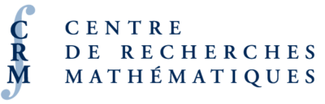

Extreme Value Analysis 2027
Welcome on the home page of Extreme Value Analysis 2027 (EVA 2027). EVA is a biennial international conference on extreme value analysis, probabilistic and statistical models and their applications. The 15th edition will be hosted by HEC Montréal in downtown Montréal (Québec, Canada) at the Hélène-Desmarais building from Monday July 5th until Friday July 9th, 2027.
Satellite workshops and courses will take place on Sunday, July 4th, as well as the week before the conference starts.
Location
The address of the venue is 501, rue de la Gauchetière Ouest, Montréal, H2Z 1Z5.
The downtown campus is easily reached by public transport, either via metro (Square-Victoria-OACI station, orange line), or from the Gare Centrale REM station.
The coffee breaks and standing lunches will take place in the A.373 Centre de conférence Claude-Séguin, located next to the Entrée Famille Karim (boul. René-Lévesque Ouest).
Plenary talks will take place in room A.335 Amphithéâtre Rachelle et Alain-Paris.
Registration will be at room A.393.
Contributed and invited talks will be in classrooms
- C.403 Louis-R.-Chênevert
- C.409 Gilles-Labbé
- C.415 Pierre Fitzgibbon
- C.406 Josée-Fiset
- C.412 Malette
Scientific committee
The tasks of the scientific committee all relate to the organization of the scientific activities. The scientific committee will:
- oversee invited talks (determining topics and organizers),
- review the contributed talks proposals and build the the program and the schedule,
- organize the satellite workshops
- prepare and oversee the data challenge, including the special issue for Extremes
- organize a poster competition and judge the latter
- adjudicate, together with members of the Extremes board, the best paper award for junior researchers.
The committee for the 2027 edition of EVA is formed of:
- Boris Béranger (University of New South Wales Sidney)
- Miguel de Carvalho (University of Edinburgh), communication officer
- Clément Dombry (Université de Franche-Comté)
- Anna Kiriliouk (Université catholique de Louvain)
- Thomas Mikosch (University of Copenhagen)
- Philippe Naveau (LSCE, CNRS)
- Thomas Opitz (INRAE Avignon)
- Jordan Richards (University of Edinburgh), data challenge organiser
- Anne Sabourin (Université Paris Cité), chairperson
- Johan Segers (KU Leuven)
- Emma Simpson (University College London)
- Benjamin Shaby (Colorado State University)
- Stilian Stoev (University of Michigan)
- Kirstin Strokorb (University of Bath)
- Gilles Stupfler (Université d’Angers)
- Thordis Thorarinsdottir (University of Oslo)
Local organizing committee
- Léo Belzile (HEC Montréal), lead organizer
- Rafal Kulik (University of Ottawa)
- Johanna G. Nešlehová (McGill)
- Michaël Lalancette (UQÀM)
Sponsors
We gratefully acknowledge financial support from
- the Centre de Recherche Mathématiques
- HEC Montréal
- the Canadian Statistical Science Institute (CANSSI) with support from NSERC



Practical information
Montreal Tourism office has practical information about the city.
You may need an electronic travel authorization (eTA) or a visitor visa. Check this video for more details about the application. Please contact the organizing committee if you need a letter for your visa application.
Montréal-Trudeau International Airport (YUL) is well connected with major American and European cities. The airport is easily reached via the 747 bus.
The organizing committee will contact hotels to book rooms at a discounted rate. There are numerous hostels, hotels and bed and breakfasts close to downtown.
History
The inception of EVA dates back to Vimeiro meeting in Portugal in 1983 in August 31st–September 14th. Further meetings in the field were organized in Oberwolfach with the 1987 Conference on Extremewertheorie, and the Gaithersburg 1993 Conference on Extreme Value Theory and its Applications.
Previous editions of EVA took place in:
- Göteborg, Sweden (1998)
- Leuven, Belgium (2001)
- Aveiro, Portugal (2004)
- Göteborg, Sweden (2005)
- Bern, Switzerland (2007)
- Fort Collins, Colorado, USA (2009)
- Lyon, France (2011)
- Shanghai, China (2013)
- Ann Arbor, Michigan, USA (2015)
- Delft, Netherlands (2017)
- Zagreb, Croatia (2019)
- Edinburgh, UK (2021, virtual)
- Milano, Italy (2023)
- Chapel Hill, North Carolina, USA (2025)